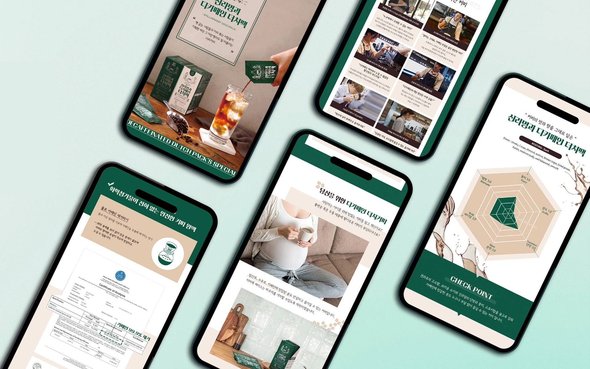
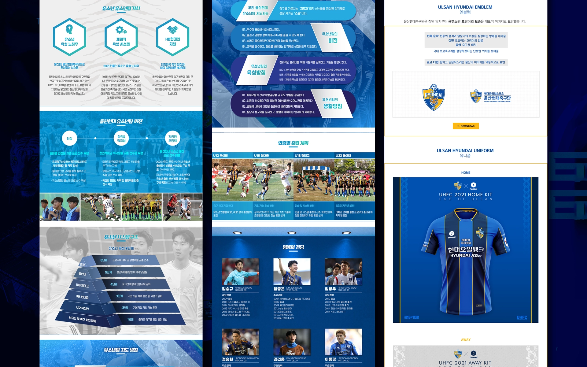

Sportal Korea
K LEAGUE
WEBSITE DESIGN
DAEJEON HANA CITIZEN & ULSAN HD

DAEJEON HANA CITIZEN
K리그 대전하나시티즌 공식 홈페이지 디자인
대전 FC가 대전 하나 시티즌으로 변경되면서 CI/BI도 새롭게 개편되었고, 이에 맞춰 홈페이지를 새롭게 디자인했습니다. 다수가 디자인 시안을 만들어 제출해서 하나 채택하는 방식이었는데, 제 디자인이 채택되어 디자인을 진행했고, 아직까지 같은 디자인으로 운영되고 있습니다. 구단의 공식 색상을 적극 활용하여 시각적인 가독성을 높였으며, 곡선보다는 직선 위주의 요소를 사용해 강렬한 인상을 주도록 디자인했습니다.
- Overview
- K리그 대전하나시티즌 홈페이지 디자인
- 기여도
- Official Website UI, Information Structure, Main Page
- Work Date
- 2021. 02
DAEJEON HANA CITIZEN SUBPAGE
대전하나시티즌 홈페이지 좌석안내 페이지

좌석 안내 페이지에서는 경기장 평면도를 그래픽화해 구역별 색상을 다르게 적용하고, 좌석별 사진을 추가하여 이해도를 높였습니다. 또한, 입장 정책 표에도 동일한 색상을 활용해 가독성을 높였으며, 이미지가 아닌 HTML로 제작해 모바일에서도 최적화된 형태로 구현했습니다.
- Design Scope
- 홈페이지 서브 페이지 디자인
- Featured Page
- 좌석 안내 페이지
ULSAN HD SUBPAGE
울산HD 홈페이지 유소년 소개 페이지

K리그 11개 구단 중 가장 많은 디자인 작업을 진행한 울산현대입니다. 유소년 소개 페이지에서는 울산현대의 주요 컬러인 블루와 옐로우 대신, 보다 친근하고 긍정적인 이미지를 강조하기 위해 연한 하늘색을 메인 컬러로 활용했습니다. 또한, 정보 전달력과 가독성을 극대화하기 위해 아이콘, 표, 피라미드 그래픽 등을 활용하여 체계적이고 직관적인 레이아웃을 구성했습니다.
- Design Scope
- 홈페이지 서브 페이지 디자인
- Featured Page
- 유소년 소개 페이지